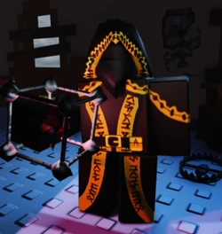

Taph in Last Man Standing
Tips and Tricks for Taph as the Last Man Standing
- Tuck your tripwires behind corners and keep the pegs out of sight. The harder to see, the more likely the killer will run right into them
- Hide your subspace mine in corners you can get the killer to want to take, almost like you are setting up their shortcuts and turning them into traps. Remember, the subspace mine is incredible at getting you out of a chase, so it is reccomended that once it hits, you get out of range
- If you have any medkits available, use them when you have distance from the killer and are missing more than half your health, as it is basically impossible to hide in Last Man Standing and the extra health can be a gamechanger
- If you have a soda, keep your eyes out for the killer and when you see them approaching from a far distance, use the soda to gain a Speed 2 buff that will let you get away from most killers easily(1x1x1x1 has far better speed capabilities than any other killer and survivor)
Taph is a survivor that requires a little bit of preparation and game know-how, but once you know how he works and what he can do, he is by far one of the hardest survivors to find and finish